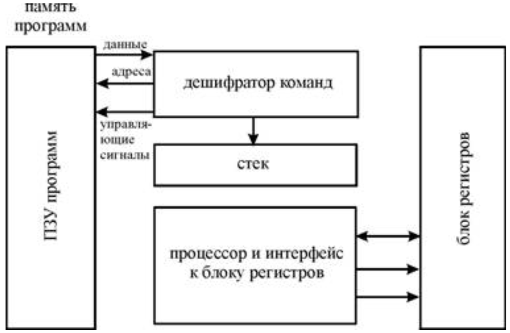

Дополнительные вопросы [+]
- Компьютер [+]
Существует множество различных формулировок понятия ЭВМ от достаточно простых и понятных до чрезмерно вычурных, которые, однако, схожи по своей сути.
По Э. Таненбауму:
Цифровой компьютер - машина, которая может решать задачи, выполняя данные ей команды. Последовательность команд, описывающих решение определённой задачи, называется программой.По Б. Я. Цилькеру:
ЭВМ - устройство, которое принимает данные, обрабатывает их в соответствии с хранимой программой, генерирует результаты и обычно состоит из блоков ввода/вывода, памяти, арифметики, логики и управления.По Новикову, Майорову:
ЭВМ - искусственная (инженерная) машина, предназначенная для вычислений на основе алгоритмов. - Алгоритм [+]
Под алгоритмом понимается: конечный набор точных и понятных предписаний (правил, инструкций, команд), позволяющих механически решать конкретную задачу из определенного класса однотипных задач. Основными свойствами такого «интуитивного» понятия алгоритма являются:
Массовость
Означает, что алгоритм применим к целому классу задач, а при решении конкретной задачи из класса исходные данные могут меняться в определенных пределах. Детерминированность. Процесс применения правил к исходным данным (путь решения задачи) определен однозначно.Дискретность
Означает, что путь решения задачи определен в виде последовательности шагов – четко разделенных друг от друга предписаний. Только выполнив одно предписание, можно приступить к выполнению следующего.Результативность
На каждом шаге процесса применения правил известно, что считать результатом этого процесса, а сам процесс должен закончиться за конечное число шагов.Понятность
Означает, что алгоритм создается в расчете на определенного исполнителя, т.е. необходимо, чтобы он мог понять и выполнить каждый шаг предписания. - Архитектура [+]
Компьютерная архитектура, как и другая архитектура, — это искусство определения потребностей пользователя структуры, а затем проектирования для максимально эффективного удовлетворения этих потребностей в рамках экономических и технологических ограничений.
Первая документально оформленная компьютерная архитектура находилась в переписке между Чарльзом Бэббиджем и Адой Лавлейс, описывающим механизм анализа. При создании компьютера Z1 в 1936 году Конрад Цузе описал в двух патентных заявках свои будущие проекты. Два других ранних и важных примера:
Статья Джона фон Неймана 1945 года, первый проект отчета об EDVAC, в котором описана организация логических элементов
Более подробный Предложенный Электронный Калькулятор Алана Тьюринга для Автоматического Вычислительного Двигателя, также 1945 и который привел статью Джона фон Неймана.
- Архитектура фон Неймона [+]
В 40-х годах известный математик Джон фон Нейман пришёл к выводу, что вычислительные машины, в которых программы задаются буквально вручную, переключением рычагов и проводов, чрезмерно сложны для практического использования. Он создаёт концепцию, по которой исполняемые коды хранятся в памяти так же, как и обрабатываемые данные. Отделение процессорной части от накопителя данных и принципиально одинаковый подход к хранению программ и информации стали краеугольными камнями архитектуры фон Неймана. Эта компьютерная архитектура до сих пор является самой распространённой. Именно от первых устройств, построенных на архитектуре фон Неймана, отсчитываются поколения ЭВМ. Итак принципы фон Неймана:
1. Принцип программного управления
Из него следует, что программа состоит из набора команд, которые выполняются процессором автоматически друг за другом в определенной последовательности. Выборка программы из памяти осуществляется с помощью счетчика команд. Этот регистр процессора последовательно увеличивает хранимый в нем адрес очередной команды на длину команды. Так как команды программы расположены в памяти друг за другом, то тем самым организуется выборка цепочки команд из последовательно расположенных ячеек памяти. Если после выполнения команды следует перейти не к следующей, а к какой-то другой, используются команды условного или безусловного переходов (ветвления), которые заносят в счетчик команд номер ячейки памяти, содержащей следующую команду. Выборка команд из памяти прекращается после достижения и выполнения команды «стоп». Таким образом, процессор исполняет программу автоматически, без вмешательства человека.2. Принцип однородности памяти
Программы и данные хранятся в одной и той же памяти. Поэтому компьютер не различает, что хранится в данной ячейке памяти — число, текст или команда. Над командами можно выполнять такие же действия, как и над данными. Это открывает целый ряд возможностей. Например, программа в процессе своего выполнения также может подвергаться переработке, что позволяет задавать в самой программе правила получения некоторых ее частей (так в программе организуется выполнение циклов и подпрограмм). Более того, команды одной программы могут быть получены как результаты исполнения другой программы. На этом принципе основаны методы трансляции — перевода текста программы с языка программирования высокого уровня на язык конкретной машины.3. Принцип адресности
Структурно основная память состоит из перенумерованных ячеек; процессору в произвольный момент времени доступна любая ячейка. Отсюда следует возможность давать имена областям памяти, так, чтобы к запомненным в них значениям можно было впоследствии обращаться или менять их в процессе выполнения программ с использованием присвоенных имен. - Компьютер фон Неймона [+]
Эти Компьютеры относятся к типу фон-неймановских или, как их еще иначе называют, принстонских и характеризуются использованием общей оперативной памяти для хранения программ, данных, а также для организации стека. Для обращения к этой памяти используется общая системная шина, по которой в процессор, по которой в процессор поступают и команда, и данные. Эта архитектура имеет ряд важных достоинств. Наличие общей памяти позволяет оперативно перераспределять ее объем для хранения отдельных массивов команд, данных и реализации стека в зависимости от решаемых задач. Таким образом, обеспечивается возможность более эффективного использования имеющегося объема оперативной памяти в каждом конкретном случае применения МП. Использование общей шины для передачи команд и данных значительно упрощает отладку, тестирование и текущий контроль функционирования системы, повышает ее надежность. Поэтом Принстонская архитектура в течение долгого времени доминировала в вычислительной технике.
Однако ей присущи и существенные недостатки. Основным из них является необходимость последовательной выборки команд и обрабатываемых данных по общей системной шине. При этом общая шина становится «узким местом», которое ограничивает производительность цифровой системы.
Данная проблема решается совершенствованием систем кэширования, что в свою очередь усложняет архитектуру систем и увеличивает риск возникновения побочных ошибок (например, в 2017 году были обнаружены уязвимости Meltdown и Spectre, присутствовавшие в современных процессорах в течение десятилетий, но не обнаруженные ранее из-за сложности современных вычислительных систем и, в частности, их взаимодействия с кэш-памятью).
Существуют и другие классы компьютеров, принципиально отличающиеся от фон-неймановских. Здесь, например, может не выполняться принцип программного управления, т. е. они могут работать без счетчика (регистра адреса) команд, указывающего на выполняемую команду программы. Для обращения к какой-либо переменной, хранящейся в памяти, этим компьютерам не обязательно давать ей имя. Такие компьютеры называются не-фон-неймановскими. Одним из примеров не-фон-неймановскими компьютеров являются компьютеры, построенные на гарвардской архитектуре.
- Гарвардская архитектура [+]
В гарвардской архитектуре принципиально невозможно осуществить операцию записи в память программ, что исключает возможность случайного разрушения управляющей программы в случае ошибки программы при работе с данными или атаки третьих лиц. Кроме того, для работы с памятью программ и с памятью данных организуются отдельные шины обмена данными (системные шины), как это показано наструктурной схеме, приведенной на рис. 1
Рис. 1 — Структурная схема гарвардской архитектурыЭти особенности определили области применения гарвардской архитектуры. Гарвардская архитектура применяется в микроконтролерах и в сигнальных процессорах , где требуется обеспечить высокую надёжность работы аппаратуры. В сигнальных процессорах Гарвардская архитектура дополняется применением трехшинного операционного блока микропроцессора. Трехшинная архитектура операционного блока позволяет совместить операции считывания двух операндов с записью результата выполнения команды в оперативную память микропроцессора. Это значительно увеличивает производительность сигнального микропроцессора без увеличения его тактовой частоты.
В Гарвардской архитектуре характеристики устройств памяти программ и памяти данных не всегда выполняются одинаковыми. В памяти данных и команд могут различаться разрядность шины данных и распределение адресов памяти. Часто адресные пространства памяти программ и памяти данных выполняют различными. Это приводит к различию разрядности шины адреса для этих видов памяти. В микроконтроллерах память программ обычно реализуется в виде постоянного запоминающего устройства, а память данных — в виде ОЗУ. В сигнальных процессорах память программ вынуждены выполнять в виде ОЗУ. Это связано с более высоким быстродействием оперативного запоминающего устройства, однако при этом в процессе работы осуществляется защита от записи в эту область памяти.
Применение двух системных шин для обращения к памяти программ и памяти данных в гарвадской архитектуре имеет два недостатка — высокую стоимость и большое количество внешних выводов микропроцессора. При использованиии двух шин для передачи команд и данных, микропроцессор должен иметь почти вдвое больше выводов, так как шина адреса и шина данных составляют основную часть выводов микропроцессора. Для уменьшения количества выводов кристалла микропроцессора фирмы- производители микросхем объединили шины данных и шины адреса для внешней памяти данных и программ, оставив только различные сигналы управления (WR, RD, IRQ) а внутри микропроцессора сохранили классическую гарвардскую архитектуру. Такое решение получило название модифицированная гарвардская архитектура.
Модифицированная гарвардская структура применяется в современных микросхемах сигнальных процессоров. Ещё дальше по пути уменьшения стоимости кристалла за счет уменьшения площади, занимаемой системными шинами пошли производители однокристалльных ЭВМ — микроконтроллеров. В этих микросхемах применяется одна системная шина для передачи команд и данных (модифицированная гарвардская архитектура) и внутри кристалла.
В сигнальных процессорах для реализации таких алгоритмах как быстрое преобразование Фурье и цифровая фильтрация часто требуется еще большее количество внутренних шин. Обычно применяются две шины для чтения данных, одна шина для записи данных и одна шина для чтения инструкций. Подобная структура микропроцессора получила название расширенной гарвардской архитектуры.
- Уровни компьютера (компьютерной абстракции)
- «железо» — 1 уровень
- «вентили» — 2 уровень
- «микропрограммы» — 3 уровень
- «ассемблер» — 4 уровень
- «ОС» — 5 уровень
- уровень языков программирования
Билеты
- Многоуровневая организация вычислительных машин (1.1)
- Понятия алгоритма, процесса и процессора (1.3, 1.4)
- Принципы программного управления фон Неймана (1.5)
- Принстонская и гарвардская архитектуры вычислительных машин (1.5)
- Представление данных в вычислительных машинах (2.1)
- Машинные операции. Наборы машинных операций и назначение ЦВМ (2.7)
- Машинные команды. Структуры и форматы (2.8)
- Типы адресации. Способы адресации (2.10)
- Непосредственная, литеральная и прямая адресации (2.10)
- Косвенная адресация
- Относительная адресация
- Регистровая адресация
- Стековая адресация
- Процессор и его функции (5.1)
- Программная модель (регистровая структура) процессора (2.12)
- Система прерываний, ее функции и их реализация на программном уровне (2.13)
- Основные узлы процессора (6.1)
- Понятие операционного устройства (операционный автомат) (6.3)
- Устройство управления (управляющий автомат)
- Конвейерная обработка, уровни и структурные конфликты
- Параллелизм, зависимости между командами (8.1, 8.2)
- Организация памяти ЭВМ. Основные определения и характеристики (9.1)
- Иерархическая система памяти (9.2)
- Блочная организация основной памяти (9.4)
- Память с расслоением обращений (9.5)
- Ассоциативная память (10.1)
- Организация кэш-памяти (10.2)
- Способы отображения оперативной памяти на кэш-память (10.3)
- Алгоритмы замещения и согласования информации в кэш-памяти (10.4, 10.5)
- Виды внешней памяти
- Понятие виртуальной памяти (17.1)
- Страничная и сегментно-страничная организация памяти (17.2)
- Массивы дисков с избыточностью (RAID-массивы) (11.4)
- Организация и виды шин данных (12.1)
- Иерархия шин данных (12.5)
- Схемы приоритетов, арбитража и опроса шин данных (12.6)
- Синхронный и асинхронный протоколы шин данных (12.12)
- Системы ввода/вывода (13.1)
- Адресное пространство системы ввода/вывода (13.2)
- Обобщенная структура внешних устройств (13.5)
- Методы управления вводом/выводом (14.1)
- Уровни параллелизма (15.1)
- Метрики параллельных вычислений (15.3)
- Законы параллельных вычислений (15.4)
- Векторные и векторно-конвейерные вычислительные системы (16.1)
- Матричные вычислительные системы (16.4)